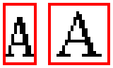
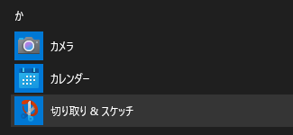
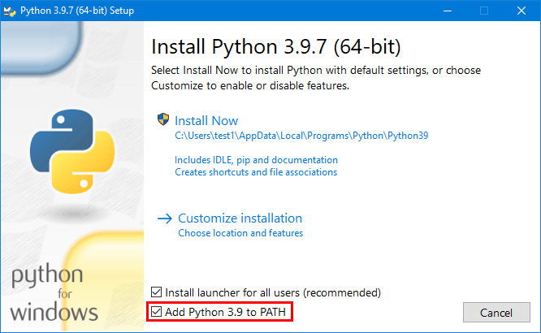
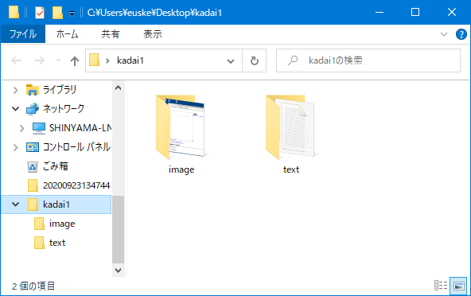

| ファイル形式 | 拡張子 |
|---|---|
| テキストファイル | .txt |
| HTMLファイル | .html または .htm |
| JPEG画像ファイル | .jpeg または .jpg |
| PNG画像ファイル | .png |
| 音声ファイル | .mp3 など |
| 動画ファイル | .mp4, .mov など |
| 圧縮ファイル | .zip |
| 実行可能ファイル(アプリ) | .app, .exe |
2.4. 「メタデータ」とは?
実際のファイルには、そのファイルの内容だけでなく、 以下のような情報も付随している:
- そのファイルは誰によって作られたか。
- そのファイルはいつ修正されたか。
- そのファイルの大きさ (ファイルサイズ) はどのくらいか。
- インターネットから、 テキスト形式のファイルと、 画像形式のファイルをそれぞれ 1つずつダウンロードせよ。
- ダウンロードしたファイルの拡張子を確認せよ。
- 各ファイルのアイコンを右クリックし、
- Windows の場合 … プロパティ... を実行
- Mac の場合 … 情報を見る を実行
- 以下のフォルダを探索し、
その中にあるJPEG画像ファイル (拡張子
.jpg) を発見せよ。 また、そのパス名を答えよ。- Window の場合 … C: ドライブの中の「
Windows」フォルダ - Mac の場合 … Macintosh HD の中の「
ライブラリ」フォルダ
- Window の場合 … C: ドライブの中の「
3. パソコンの基礎: コマンド プロンプト (ターミナル) を使う
コマンド プロンプト (Mac では ターミナル) とは、 文字入力を使ってパソコンを制御するためのアプリである。 本授業では、コマンド プロンプトを使ってほとんどの演習をおこなう。
3.1. コマンド プロンプト (ターミナル) を起動する
Windowsの場合
- スタートメニューから Windows システムツール → コマンド プロンプト を選ぶ。
Macの場合
- Finder のメニューから 表示 → ユーティリティ を選び、 ターミナル のアイコンを開く。
3.2. コマンド プロンプト (ターミナル) の使い方・超基本
- コマンドを入力して Enter を押す。
- コマンドには、実行するアプリのパス名を入力する。
- そのアプリが実行され、結果が表示される。
- → 1. に戻る。
文字入力するときの注意
- 2種類の英字に注意。 
- 全角: Ｇｏｄｚｉｌｌａ．
- 半角: Godzilla.
- コマンドは必ず半角 (英数字モード) で入力すること!
- じつは世界には似たような文字が一杯ある。
- AＡΑАĄ
文字コード:
コマンド プロンプト (ターミナル) では、 アプリのパス名をコマンドとして入力すると、そのアプリが実行される。
- Windowsの場合:
コマンド プロンプトを開き、以下のコマンドを半角で入力せよ:- C:\Windows\System32\notepad.exe
- Macの場合:
ターミナルを開き、以下のコマンドを半角で入力せよ:- /System/Applications/TextEdit.app/Contents/MacOS/TextEdit
これ以外にもいろいろなコマンドがあるが、すべて覚える必要はない。
以下のコマンドを入力し、結果を確認せよ。
- Windowsの場合:
- dir C:\Windows\System32
- dir /w C:\Windows\System32
Windows では、dir コマンドを使うと、 指定されたパス名のファイル一覧を表示できる。 短縮表示するには dir /w を使う。
- Macの場合:
- ls /Applications/Utilities
- ls -l /Applications/Utilities
Mac では、ls コマンドを使うと、 指定されたパス名のファイル一覧を表示できる。 詳細表示するには ls -l を使う。
3.3. カレント・フォルダという考え方
- パス名を使うことの問題: いくらでも長くなりうる!
/Applications/Safari.app/Contents/MacOS/... - いちいちパス名を入力するのは面倒。簡単にできないか?
→ いま注目している (カレント, current) フォルダという考えを導入する。
以下のコマンドを順に実行し、何が起きたのか観察せよ:
- Windowsの場合:
- cd
- dir
- cd \Windows
- cd
- dir
- Macの場合:
- pwd
- ls
- cd /Applications
- pwd
- ls
現在の「注目しているフォルダ」のことを 「カレント・フォルダ」あるいは 「カレント・ディレクトリ」と呼ぶ。 (もともとフォルダはディレクトリと呼ばれていた。 用語としては、ディレクトリのほうが古い。)
Windowsの場合
- cd (Change Directory) コマンド:
カレント・フォルダのパス名を表示する。 - cd パス名 (Change Directory) コマンド:
カレント・フォルダを指定したパス名に変更できる。 - dir コマンド:
パス名を省略して実行すると、 カレント・フォルダのファイル一覧を表示する。
Macの場合
- pwd (Print Working Directory) コマンド:
カレント・フォルダのパス名を表示する。 - cd パス名 (Change Directory) コマンド:
カレント・フォルダを指定したパス名に変更できる。 - ls コマンド:
パス名を省略して実行すると、 カレント・フォルダのファイル一覧を表示する。
- 自分のデスクトップ (フォルダ) のパス名を確認せよ。
- cd コマンドを使って、 カレントフォルダを「デスクトップ (あるいは Desktop)」フォルダに変更せよ。
- デスクトップ上に適当なフォルダを新規作成せよ。
- pwd または ls コマンドを使って、 いま作成したフォルダが存在することを確認せよ。
4. パソコンの基礎: 画面のスクリーンショットを撮る
自分のパソコンで指示された操作がうまくできない場合、 その画面の スクリーンショット を撮影し、教員または TA に送ること。 スマートフォンのカメラで画面の写真を撮ったりしないこと (見にくいしダサいため)。
Windows の場合
- スタートメニューから 切り取り・スケッチ を選ぶ。
(あるいは Print Screen キーを押してもよい。)
Mac の場合
- Finder のメニューから 表示 →
ユーティリティ を選び、
スクリーンショット のアイコンを開く。
(あるいは Shift + ⌘ Command + 5 を押してもよい)

アプリが起動したら撮影する範囲を指定し、 結果を PNG形式の画像ファイルとして保存する。 あとはこれをメールに添付しても送ってもよいし、 Discord チャットに投稿してもよい。 (本日の小課題1 では、これを提出してもらう)
5. Python プログラムの基礎
5.1. Python をインストールする
https://www.python.org/ に アクセスし、Python 3.9.x または 3.10.x をダウンロードする。(最後の x の部分は何でもよい)
インストールするには、以下の方法に従う:
- Windows の場合
インストール時のウィンドウに表示される Add Python 3.9 to PATH の部分をチェックすること。 - Mac の場合
インストーラを開き、普通にインストールを完了させる。
5.2. 最初の Python プログラムを書く
- コマンド プロンプト (ターミナル) を起動する。
- デスクトップ上にフォルダをひとつ作成し、
そこに
hello.pyというテキスト形式のファイルを新規作成する。 ここでは Windows であれば「メモ帳 (notepad)」、 Mac であれば「IDLE」を使う。 このようなアプリを以後テキストエディタ (あるいは単にエディタ) と呼ぶ。以下のように入力する。 (注意: 大文字・小文字の区別は正確に!)
- Windowsの場合:
C:\Users\euske> cd デスクトップ (または Desktop) C:\Users\euske\デスクトップ> mkdir cs1 C:\Users\euske\デスクトップ> cd cs1 C:\Users\euske\デスクトップ\cs1> notepad hello.py
注意: OneDriveが動いているWindowsの場合は、 デスクトップフォルダの位置が異なるため、以下のように入力する:
C:\Users\euske> cd OneDrive\デスクトップ (または OneDrive\Desktop) C:\Users\euske\OneDrive\デスクトップ> mkdir cs1 C:\Users\euske\OneDrive\デスクトップ> cd cs1 C:\Users\euske\OneDrive\デスクトップ\cs1> notepad hello.py
- Macの場合:
euske@shinyama-mbpro ~ % cd Desktop euske@shinyama-mbpro Desktop % mkdir cs1 euske@shinyama-mbpro cs1 % cd cs1 euske@shinyama-mbpro cs1 % idle3 hello.py
- Windowsの場合:
- 以下のプログラムを入力する。
hello.py
print("Hello, World!") - 完成したプログラム
hello.pyを実行する。- Windowsの場合:
C:\Users\euske\Desktop\cs1> python hello.py Hello, World!
- Macの場合:
euske@shinyama-mbpro cs1 % python3 hello.py Hello, World!
- Windowsの場合:
以下、この hello.py をいろいろなファイルに
変えることで演習・課題をおこなう。
5.3. 変数を使う
- 「ターミナル」を起動する。
- 先ほど作成したフォルダに
cdする。 - テキストエディタを使って
greetings.pyというテキストファイルを作成する。
1文字も間違えないように!greetings.pyprint("What is your name?") x = input("name:") print(f"Good morning {x}!") - Python で
greetings.pyを実行する。$ python greetings.py What is your name? name:euske Good morning euske!
- 上のプログラムを入力し、実行せよ。
5.4. 文とは?
プログラム中の各行を、それぞれ 文 (statement) とよぶ。 各文は、書かれたとおりの順序で実行される。
| 文1 | print("What is your name?") |
| 文2 | x = input("name:") |
| 文3 | print(f"Good morning {x}!") |
- 上のプログラムの 2行目と3行目を入れかえると、何が起こるか確認せよ。
- 上のプログラムの 3行目を10個繰り返し (コピーを使う)、
「Good morning 名前 !」が 10回表示されるようにせよ。
ふたたび、コンピュータサイエンスとは何か?
コンピュータサイエンスとは、 「手順 (プロセス)」をあつかう学問である。
プログラムにおいて、実行順序はきわめて重要である。 ある意味、カレーの作り方もプログラムである。(実行順序が重要)
{kind=link}
5.5. 関数・変数・代入とは?
各文のなかの print(...)、input(...) のような部分を
関数 (function) とよぶ。
また、x のような部分を変数 (variable) とよび、
x = input("name:") という文全体を
代入文 (assignment) という。
変数は、いくつでも定義することができる。
greetings2.py
print("What is your name?")
x = input("name1:")
y = x
print(f"Good morning {x} and {y}!")
- 上のプログラムの文
y = xでinput()関数を使い、 実際に 2人目の名前を尋くようにせよ。
変数の上書き
さらに、一度変数に代入された値は、別の代入文で上書きすることができる。
greetings3.py
x = input("name1:")
y = input("name2:")
x = y
print(f"Good morning {x} and {y}!")
- 上のプログラムがどう動くか、実行する前に予測せよ。
変数の入れ替え
代入文をある順序で書くと、 2つの変数の内容を入れ替えることができる。
swap.pyx = "john" y = "mary"??? ??? ???print(f"x={x}, y={y}")
- 上のプログラム中の
???部分に代入文をいくつか書き、 変数xとyの値を入れ替えるようにせよ。
(ヒント:xとy以外に もうひとつの変数が必要。)$ python swap.py x=mary, y=john
6. 本日のまとめ・小課題
- パソコンの基礎を復習した。
- Pythonの基本的な使い方を学習した。
- 提出期限:
10月11日10月18日 (1週間後) - 以下のような構成の Zip形式 のファイルを作成し、
T2SCHOLA から提出せよ。
- まず、"
kadai1" フォルダを作成する。 その中にさらに 2つのフォルダ "text" と "image" を作成する。textフォルダの中に テキスト形式のファイルをひとつ入れ、imageフォルダの中に さきほど撮影した自分の PC の スクリーンショット (PNG形式の画像ファイル) をひとつ入れる。 画面の内容はなんでもよい。 最後にkadai1フォルダ全体をZip形式として圧縮する。 - 最終的なフォルダ構成は次のようになっているはずである:
- kadai1
- text
- (テキスト形式のファイル...)
- image
- (PNG形式のファイル...)
 - text
- kadai1
- Zip形式のファイルを作成するには、以下のようにする:
- Windows の場合:
フォルダを右クリックし、メニューから
送る(N) > 圧縮 (zip形式) フォルダー を選ぶと
圧縮された zip ファイルが生成される。

- Mac の場合:
フォルダを右クリックし、メニューから
kadai1 を圧縮 を選ぶと、圧縮された zip ファイルが生成される。

- Windows の場合:
フォルダを右クリックし、メニューから
送る(N) > 圧縮 (zip形式) フォルダー を選ぶと
圧縮された zip ファイルが生成される。
- まず、"
- 提出期限:
10月11日10月18日 (1週間後) - 演習 1-14. で作成したプログラム
swap.pyを T2SCHOLA から提出せよ。swap.py
x = "john" y = "mary"
??? y = x ???print(f"x={x}, y={y}")
反省 (10/04)
大幅に時間が足りなくなった。ガイダンスやパソコンの基礎はもっと短くし、 Pythonの使い方に時間を割くべきだった。
Yusuke Shinyama